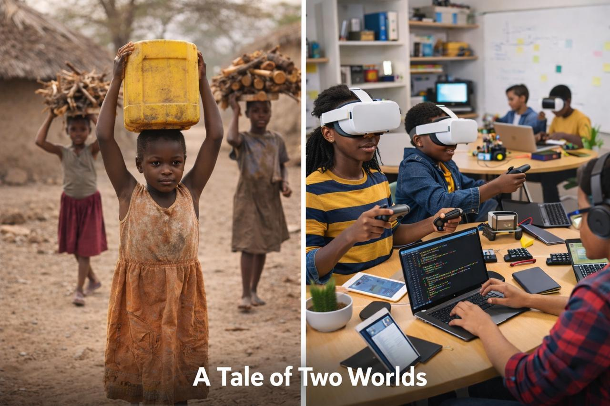

Access to high-quality STEM education should not depend on geography, gender, or income. Yet many learners, particularly girls and young people in rural and low-income communities, remain underrepresented in emerging technology fields.
This initiative combines hands-on technical training with leadership development to prepare young people not only to participate in the digital future but also to lead within it.

Interactive, experiential learning that builds real-world skills and confidence.
Developing critical thinking and analytical abilities through data-driven approaches.
Teaching responsible technology practices and ethical considerations in innovation.
Building leadership capacity and strong character values alongside technical skills.
Ensuring equitable access to educational opportunities regardless of background.
Saturday & Sunday sessions for intensive learning and project work.
Weekday sessions for students who want to continue learning after school.
Intensive holiday programs for deep learning and skill development.
Flexible online learning options for remote participation.
Take the first step towards a brighter future with our comprehensive educational programs.